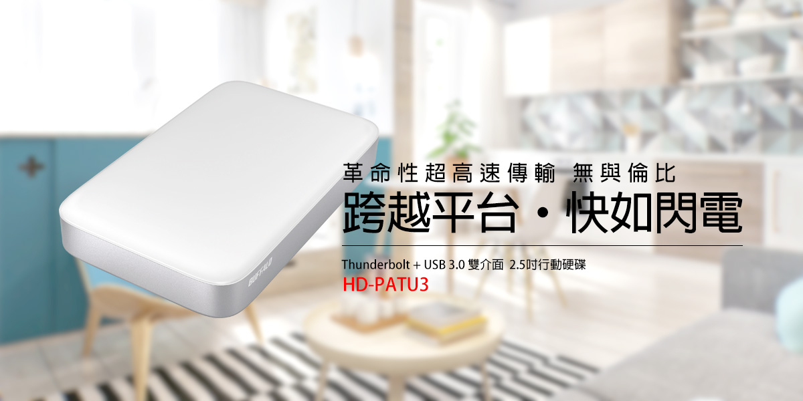
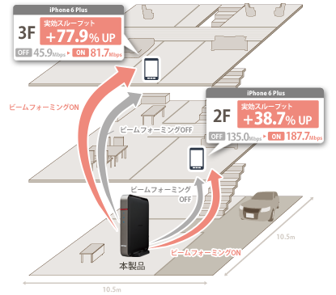
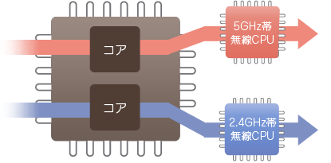
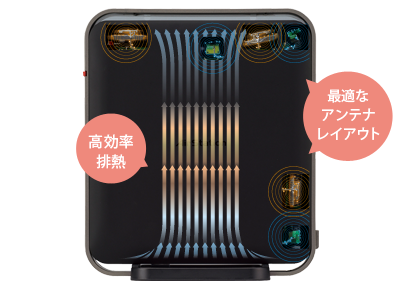
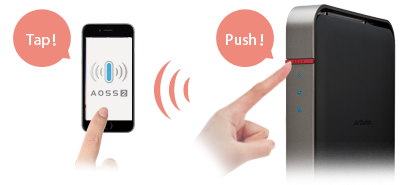
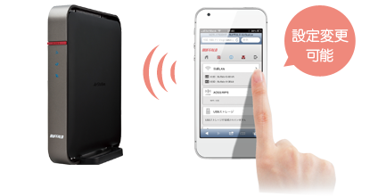
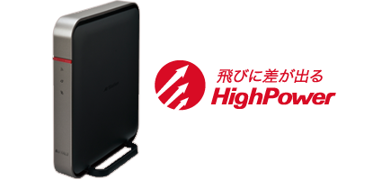
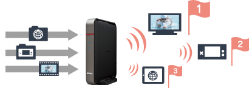
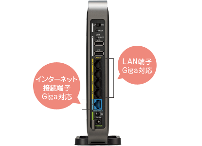
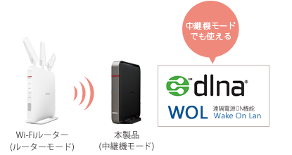

- 無界限 跨平台行動硬碟 -
BUFFALO HD-PATU3 2.5吋行動硬碟
關於速度：速度超級快的啦
3層樓透天也能順暢使用
本產品超越傳統家用無線基地台，提供全新功能，讓你體驗更大的訊號覆蓋範圍、享受更快的網路速度、可將印表機連上網路、分享最喜愛的高畫質多媒體、暢享線上遊戲，本產品所提供的Norton ConnectSafe網頁過濾器和Symantec家長控管功能可讓你的家庭成員高枕無憂的享受網際網路樂趣。

實現Giga WiFi 速度的11ac(Draft)規格
本產品所採用的「11ac(Draft)」規格，比起以往LAN規格的傳輸速度，約快2.8倍。可短時間傳送大型檔案，經由LAN傳輸播放影像檔也非常順暢。以往的規格11n/a/g/b也都能使用，無需再另備無線機器即可建構您的網路環境。 ※2013年3月現在 日本本社測定值 使用採用11ac(Draft)規格之無線基地台
5 GHz和2.4 GHz雙頻功能可同時連接更多設備
本產品為支援11ac(Draft)1300+11n/g/b450Mbps高速傳輸的HighPower 無線基地台。因可做為高速通信使用，更可發揮光纖等高速傳輸的 能力，傳送大型檔案、高畫質影片等。 ※無線LAN理論上的規格最大値為1300Mbps，並非表示實際傳送速度完全相同。 ※要以1300Mbps運作連線，無線子機也需支援1300Mbps之速度。 ※出廠設定為216Mbps（規格値）。


單體構造設計 實現高速傳輸不熱當
機體內部設計獨立式散熱，將熱由下往上排出，提升Wi-Fi的訊號穩定。
關於設定：設定超簡單的啦
具備「Multi Security」功能可混合使用各種安全性加密
具備「Multi Security」功能，只要按下AOSS，就會按照連接機器可支援的加密等級，自動選擇最高的加密等級。能夠混合利用AES、TKIP、WEP等加密方式。 ※部分機器可能必須進行設定變更。


智慧型手機也能輕鬆管理無線設定
全新管理畫面，讓您不論從智慧型手機．平版電腦都能以簡易的操作來進行設定。為訪客開放Guest port時， 也能以從智慧型手機來進行設定。 【可從從智慧型手機．平版電腦進行設定之項目】 ●無線LAN設定（SSID, 加密、變更頻道等） ●啟動AOSS / WPS ●簡易NAS設定（WebAccess設定） ●guest port（On/Off, SSID, 加密模式, 使用時間） ●advanced QoS設定（On/Off, 模式変更） ●i filter(On/Off) ●機器資訊及控管（使用者一覽、目前使用速率、WOL）
關於功能：功能超級多的啦
「波束形成技術」能夠提高無線訊號的穩定性
以往的無線LAN基地台會因距離或阻隔物的不同造成訊號減弱， 因此時常無法到達其規格值之傳輸速率。 本產品則支援「波束形成技術」，會自動偵測子機方位及距離， 確實傳達訊號，以提升資料傳輸率及穩定性。 有此功能時，相較沒有使用時的傳輸速率平均提升18.7%。 ※子機也需有支援「波束形成技術」功能才可使用


搭載「Advanced QoS」功能，播放影片更順暢
本產品搭載了「Advanced QoS」功能，在有播放影片時，優先傳輸影片之訊號，讓您的觀賞品質更順暢。
擁有Giga的速度，最適合NAS及光纖連線使用
所搭載的LAN接口(LAN4埠＆INTERNET側1埠)皆支援Gigabit Ethernet(1000BASE-T)。可與搭載GigaLAN端子的PC、 網路硬碟(NAS)(TeraStation、LinkStaion)等以Giga速度連線。 創造1300Mbps無線LAN與有線LAN的高速網路環境。 支援”Jumbo Frame”可提高Ethernet傳輸量，提升傳輸速度。 本產品有線環境實測傳輸量，DHCP為939Mbps、 PPPoE為916Mbps，有線上網也可擁有高速的環境。 【測定環境】 ServerPC:Intel Xeon 3.2GHz/メモリー 2GB Linux（Debian 6.0 32bit） ClientPC:Intel Core i5 750 2.67GHz/メモリー 3GB Windows XP SP3 32bit 【測定方法】 使用IxChariot測定ServerPC→ClientPC間60秒的傳輸量5次，平取其平均值。 (2013/3現在 日本本社測定)※速度會依環境而有所不同

